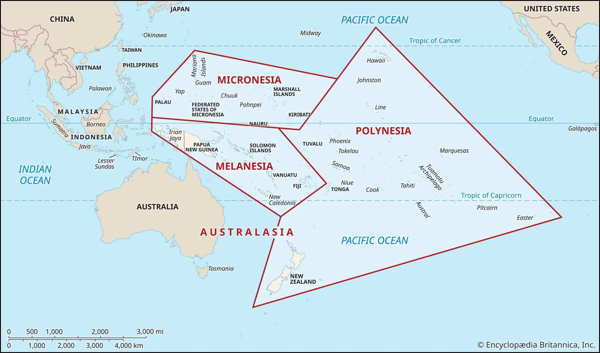

Параграф 30. Економіко-географічна характеристика

Натисніть, щоб розгорнути мапу
| Субрегіон | Особливості природи | Ключові країни |
|---|---|---|
| Меланезія | Материкові та вулканічні острови, багаті на руди. | Папуа-Нова Гвінея, Фіджі, Соломонові о-ви, Вануату. |
| Мікронезія | Дрібні коралові атоли та вулканічні острови. | Кірибаті, Палау, Маршаллові о-ви, Науру. |
| Полінезія | Величезні відстані, переважно вулканічні острови. | Самоа, Тонга, Тувалу, Острови Кука. |
| Країна | Основні галузі | Експортні товари |
|---|---|---|
| Папуа-Нова Гвінея | Гірнича пром-сть, с/г | Золото, мідь, нафта, пальмова олія, кава |
| Фіджі | Туризм, цукрова пром-сть | Цукор, текстиль, золото, мінеральна вода |
| Науру | Видобуток фосфоритів | Фосфорити (ресурси майже вичерпані) |